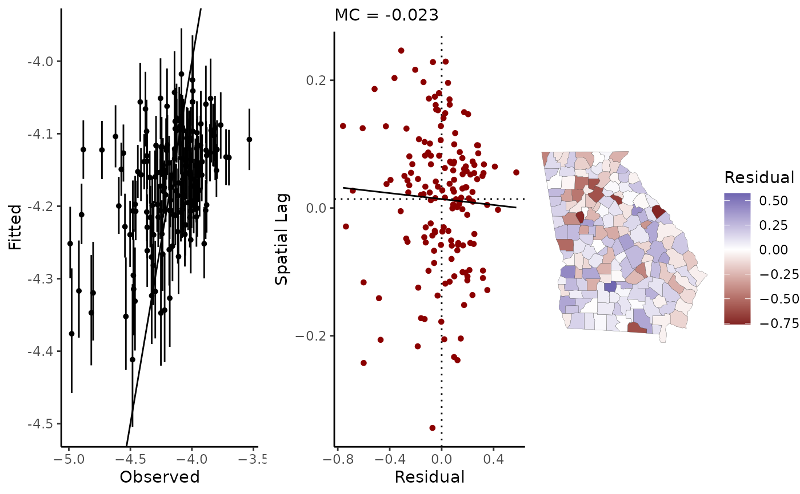
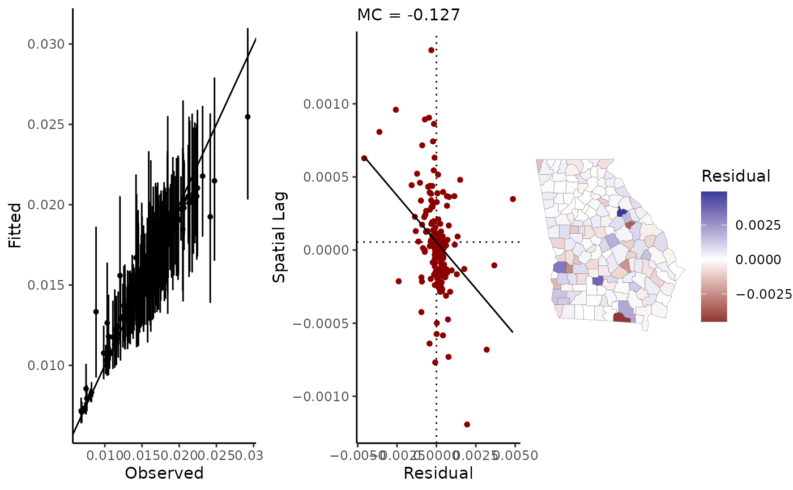

Fit data to a simultaneous spatial autoregressive (SAR) model, or use the SAR model as the prior model for a parameter vector in a hierarchical model.
stan_sar(
formula,
slx,
re,
data,
C,
sar_parts = prep_sar_data(C, quiet = TRUE),
family = auto_gaussian(),
type = c("SEM", "SDEM", "SDLM", "SLM"),
prior = NULL,
ME = NULL,
centerx = FALSE,
prior_only = FALSE,
censor_point,
chains = 4,
iter = 2000,
refresh = 500,
keep_all = FALSE,
pars = NULL,
slim = FALSE,
drop = NULL,
control = NULL,
quiet = FALSE,
...
)Cliff, A D and Ord, J K (1981). Spatial Processes: Models and Applications. Pion.
Cressie, Noel (2015 (1993)). Statistics for Spatial Data. Wiley Classics, Revised Edition.
Cressie, Noel and Wikle, Christopher (2011). Statistics for Spatio-Temporal Data. Wiley.
Donegan, Connor (2021). Building spatial conditional autoregressive (CAR) models in the Stan programming language. OSF Preprints. doi:10.31219/osf.io/3ey65 .
LeSage, James (2014). What Regional Scientists Need to Know about Spatial Econometrics. The Review of Regional Science 44: 13-32 (2014 Southern Regional Science Association Fellows Address).
LeSage, James, & Pace, Robert Kelley (2009). Introduction to Spatial Econometrics. Chapman and Hall/CRC.
A model formula, following the R formula syntax. Binomial models can be specified by setting the left hand side of the equation to a data frame of successes and failures, as in cbind(successes, failures) ~ x.
Formula to specify any spatially-lagged covariates. As in, ~ x1 + x2 (the intercept term will be removed internally). When setting priors for beta, remember to include priors for any SLX terms.
To include a varying intercept (or "random effects") term, alpha_re, specify the grouping variable here using formula syntax, as in ~ ID. Then, alpha_re is a vector of parameters added to the linear predictor of the model, and:
alpha_re ~ N(0, alpha_tau)
alpha_tau ~ Student_t(d.f., location, scale).With the SAR model, any alpha_re term should be at a different level or scale than the observations; that is, at a different scale than the autocorrelation structure of the SAR model itself.
A data.frame or an object coercible to a data frame by as.data.frame containing the model data.
Spatial weights matrix (conventionally referred to as \(W\) in the SAR model). Typically, this will be created using geostan::shape2mat(shape, style = "W"). This will be passed internally to prep_sar_data, and will also be used to calculate residual spatial autocorrelation as well as any user specified slx terms. See shape2mat.
List of data constructed by prep_sar_data. If not provided, then C will automatically be passed to prep_sar_data to create sar_parts.
The likelihood function for the outcome variable. Current options are auto_gaussian(), binomial() (with logit link function) and poisson() (with log link function); if family = gaussian() is provided, it will automatically be converted to auto_gaussian().
Type of SAR model (character string): spatial error model ('SEM'), spatial Durbin error model ('SDEM'), spatial Durbin lag model ('SDLM'), or spatial lag model ('SLM'). see Details below.
A named list of parameters for prior distributions (see priors):
The intercept is assigned a Gaussian prior distribution (see normal
Regression coefficients are assigned Gaussian prior distributions. Variables must follow their order of appearance in the model formula. Note that if you also use slx terms (spatially lagged covariates), and you use custom priors for beta, then you have to provide priors for the slx terms. Since slx terms are prepended to the design matrix, the prior for the slx term will be listed first.
Scale parameter for the SAR model, sar_scale. The scale is assigned a Student's t prior model (constrained to be positive).
The spatial autocorrelation parameter in the SAR model, rho, is assigned a uniform prior distribution. By default, the prior will be uniform over all permissible values as determined by the eigenvalues of the spatial weights matrix. The range of permissible values for rho is printed to the console by prep_sar_data.
The scale parameter for any varying intercepts (a.k.a exchangeable random effects, or partial pooling) terms. This scale parameter, tau, is assigned a Student's t prior (constrained to be positive).
To model observational uncertainty in any or all of the covariates (i.e. measurement or sampling error), provide a list of data constructed by the prep_me_data function.
To center predictors on their mean values, use centerx = TRUE. This increases sampling speed. If the ME argument is used, the modeled covariate (i.e., the latent variable), rather than the raw observations, will be centered.
Logical value; if TRUE, draw samples only from the prior distributions of parameters.
Integer value indicating the maximum censored value; this argument is for modeling censored (suppressed) outcome data, typically disease case counts or deaths which are left-censored to protect confidentiality when case counts are very low.
Number of MCMC chains to use.
Number of MCMC samples per chain.
Stan will print the progress of the sampler every refresh number of samples. Set refresh=0 to silence this.
If keep_all = TRUE then samples for all parameters in the Stan model will be kept; this is necessary if you want to do model comparison with Bayes factors using the bridgesampling package.
Specify any additional parameters you'd like stored from the Stan model.
If slim = TRUE, then the Stan model will not save the most memory-intensive parameters (including n-length vectors of fitted values, other 'random effects', and ME-modeled covariate values). This will disable some convenience functions that are otherwise available for fitted geostan models, such as the extraction of residuals, fitted values, and spatial trends, spatial diagnostics, and ME diagnostics. The "slim" option is designed for data-intensive routines, such as regression with raster data, Monte Carlo studies, and measurement error models.
Provide a vector of character strings to specify the names of any parameters that you do not want MCMC samples for. Dropping parameters in this way can improve sampling speed and reduce memory usage. The following parameter vectors can potentially be dropped from SAR models:
The N-length vector of fitted values
Vector of 'random effects'/varying intercepts.
Linear predictor inside the SAR model (for Poisson and binomial models)
N-length vector of 'latent'/modeled covariate values created for measurement error (ME) models.
Using drop = c('fitted', 'alpha_re', 'x_true', 'log_lambda_mu') is equivalent to slim = TRUE. Note that if slim = TRUE, then drop will be ignored---so only use one or the other.
A named list of parameters to control the sampler's behavior. See stan for details.
Controls (most) automatic printing to the console. By default, any prior distributions that have not been assigned by the user are printed to the console; if quiet = TRUE, these will not be printed. Using quiet = TRUE will also force refresh = 0.
Other arguments passed to sampling.
An object of class class geostan_fit (a list) containing:
Summaries of the main parameters of interest; a data frame.
Residual spatial autocorrelation as measured by the Moran coefficient.
an object of class stanfit returned by rstan::stan
a data frame containing the model data
the user-provided or default family argument used to fit the model
The model formula provided by the user (not including CAR component)
The slx formula
A list containing re, the varying intercepts (re) formula if provided, and
Data a data frame with columns id, the grouping variable, and idx, the index values assigned to each group.
Prior specifications.
If covariates are centered internally (centerx = TRUE), then x_center is a numeric vector of the values on which covariates were centered.
A data frame with the name of the spatial component parameter (either "phi" or, for auto Gaussian models, "trend") and method ("SAR")
A list indicating if the object contains an ME model; if so, the user-provided ME list is also stored here.
Spatial weights matrix (in sparse matrix format).
Type of SAR model: 'SEM', 'SDEM', 'SDLM', or 'SLM'.
Discussions of SAR models may be found in Cliff and Ord (1981), Cressie (2015, Ch. 6), LeSage and Pace (2009), and LeSage (2014). The Stan implementation draws from Donegan (2021).
There are two SAR specification options which are commonly known as the spatial error ('SEM') and the spatial lag ('SLM') models. When the spatial-lag of the covariates are included, then the model is referred to as a spatial Durbin model; depending on the model type, it becomes a spatial Durbin error model ('SDEM') or a spatial Durbin lag model ('SDLM').
The mathematics and typical interpretation of the SLM/SDLM is unusual and the conventional interpretation of regression coefficients does not apply! Use the impacts method to interpret results from the SLM and SDLM models (that is, granted that this model form is at least plausible for the application).
Use of the 'SDEM' and 'SDLM' options are for convenience only: you can also obtain the Durbin models using the slx (spatial lag of X) argument. The slx argument allows control over which covariates will be added in spatial-lag form; the Durbin options include the spatial lag of all covariates.
The spatial error specification ('SEM') is $$y = \mu + ( I - \rho C)^{-1} \epsilon$$ $$\epsilon \sim Gauss(0, \sigma^2)$$ where \(C\) is the spatial connectivity matrix, \(I\) is the n-by-n identity matrix, and \(\rho\) is a spatial autocorrelation parameter. In words, the errors of the regression equation are spatially autocorrelated.
Re-arranging terms, the model can also be written as follows: $$y = \mu + \rho C (y - \mu) + \epsilon$$ which perhaps shows more intuitively the implicit spatial trend component, \(\rho C (y - \mu)\).
The second SAR specification type is the 'spatial lag of y' ('SLM'). This model describes a diffusion or contagion process: $$y = \rho C y + \mu + \epsilon$$ $$\epsilon \sim Gauss(0, \sigma^2)$$ This is attractive for modeling actual contagion processes. Here the 'spatial trend' part is simply \(\rho C y\).
Both model types have a covariance matrix of:
$$\Sigma = \sigma^2 (I - \rho C)^{-1}(I - \rho C')^{-1}.$$
But the expected values of the models differ. The expected value for the SEM is the usual \(\mu\) (the intercept plus X*beta); the expected value of the SLM is \((I - rho C)^{-1} \mu\).
Most often, the SAR model is applied directly to observations (referred to below as the auto-normal or auto-Gaussian model). The SAR model can also be applied to a vector of parameters inside a hierarchical model. The latter enables spatial or network autocorrelation to be modeled when the observations are discrete counts (e.g., hierarchical models for disease incidence rates).
When family = auto_gaussian(), the SAR model is specified as follows:
$$y \sim Gauss(\mu, \Sigma)$$ $$\Sigma = \sigma^2 (I - \rho C)^{-1}(I - \rho C')^{-1}$$ where \(\mu\) is the mean vector (with intercept, covariates, etc.), \(C\) is a spatial weights or connectivity matrix (usually row-standardized), and \(\sigma\) is a scale parameter.
The SAR model contains an implicit spatial trend (i.e., spatial autocorrelation) component \(\phi\) which is calculated as follows: $$ \phi = \rho C (y - \mu) $$
This term can be extracted from a fitted auto-Gaussian model using the spatial method.
When applied to a fitted auto-Gaussian model, the residuals.geostan_fit method returns 'de-trended' residuals \(R\) by default. That is,
$$
R = y - \mu - \rho C (y - \mu).
$$
To obtain "raw" residuals (\(y - \mu\)), use residuals(fit, detrend = FALSE). Similarly, the fitted values obtained from the fitted.geostan_fit will include the spatial trend term by default.
For family = poisson(), the model is specified as:
$$y \sim Poisson(e^{O + \lambda})$$ $$\lambda \sim Gauss(\mu, \Sigma)$$ $$\Sigma = \sigma^2 (I - \rho C)^{-1}(I - \rho C')^{-1}.$$
O is a constant/offset term. If the raw outcome consists of a rate \(\frac{y}{p}\) with observed counts \(y\) and denominator \(p\) (often this will be the size of the population at risk), then the offset term \(O=log(p)\) is the log of the denominator.
This is often written (equivalently) as:
$$y \sim Poisson(e^{O + \mu + \phi})$$ $$ \phi \sim Gauss(0, \Sigma) $$ $$ \Sigma = \sigma^2 (I - \rho C)^{-1}(I - \rho C')^{-1}.$$
For Poisson models, the spatial method returns the parameter vector \(\phi\).
In the Poisson SAR model, \(\phi\) contains a latent (smooth) spatial trend as well as additional variation around it. If you would like to extract the latent/implicit spatial trend from \(\phi\), you can do so by calculating: $$ \rho C \phi. $$
For family = binomial(), the model is specified as:
$$y \sim Binomial(N, \lambda) $$ $$logit(\lambda) \sim Gauss(\mu, \Sigma) $$ $$\Sigma = \sigma^2 (I - \rho C)^{-1}(I - \rho C')^{-1}.$$
where outcome data \(y\) are counts, \(N\) is the number of trials, and \(\lambda\) is the rate of 'success'. Note that the model formula should be structured as: cbind(sucesses, failures) ~ 1 (for an intercept-only model), such that trials = successes + failures.
For fitted Binomial models, the spatial method will return the parameter vector phi, equivalent to:
$$\phi = logit(\lambda) - \mu.$$
As is also the case for the Poisson model, \(\phi\) contains a latent spatial trend as well as additional variation around it. If you would like to extract the latent/implicit spatial trend from \(\phi\), you can do so by calculating: $$ \rho C \phi. $$
The SAR models can also incorporate spatially-lagged covariates, measurement/sampling error in covariates (particularly when using small area survey estimates as covariates), missing outcome data, and censored outcomes (such as arise when a disease surveillance system suppresses data for privacy reasons). For details on these options, please see the Details section in the documentation for stan_glm.
##
## simulate SAR data on a regular grid
##
sars <- prep_sar_data2(row = 10, col = 10, quiet = TRUE)
w <- sars$W
# draw x
x <- sim_sar(w = w, rho = 0.5)
# draw y = mu + rho*W*(y - mu) + epsilon
# beta = 0.5, rho = 0.5
y <- sim_sar(w = w, rho = .5, mu = 0.5 * x)
dat <- data.frame(y = y, x = x)
##
## fit SEM
##
fit_sem <- stan_sar(y ~ x, data = dat, sar = sars,
chains = 1, iter = 800)
#>
#> *Setting prior parameters for intercept
#> Distribution: normal
#> location scale
#> 1 0.28 5
#>
#> *Setting prior parameters for beta
#> Distribution: normal
#> location scale
#> 1 0 5
#>
#> *Setting prior for SAR scale parameter (sar_scale)
#> Distribution: student_t
#> df location scale
#> 1 10 0 3
#>
#> *Setting prior for SAR spatial autocorrelation parameter (sar_rho)
#> Distribution: uniform
#> lower upper
#> 1 -1 1
#>
#> SAMPLING FOR MODEL 'foundation' NOW (CHAIN 1).
#> Chain 1:
#> Chain 1: Gradient evaluation took 5.7e-05 seconds
#> Chain 1: 1000 transitions using 10 leapfrog steps per transition would take 0.57 seconds.
#> Chain 1: Adjust your expectations accordingly!
#> Chain 1:
#> Chain 1:
#> Chain 1: Iteration: 1 / 800 [ 0%] (Warmup)
#> Chain 1: Iteration: 401 / 800 [ 50%] (Sampling)
#> Chain 1: Iteration: 800 / 800 [100%] (Sampling)
#> Chain 1:
#> Chain 1: Elapsed Time: 0.087 seconds (Warm-up)
#> Chain 1: 0.069 seconds (Sampling)
#> Chain 1: 0.156 seconds (Total)
#> Chain 1:
print(fit_sem)
#> Spatial Model Results
#> Formula: y ~ x
#> <environment: 0x560bef75df08>
#> Spatial method (outcome): SAR (SEM)
#> Likelihood function: auto_gaussian
#> Link function: identity
#> Residual Moran Coefficient: -0.0147
#> Observations: 100
#>
#> Inference for Stan model: foundation.
#> 1 chains, each with iter=800; warmup=400; thin=1;
#> post-warmup draws per chain=400, total post-warmup draws=400.
#>
#> mean se_mean sd 2.5% 20% 50% 80% 97.5% n_eff Rhat
#> intercept 0.196 0.009 0.176 -0.165 0.046 0.200 0.345 0.530 388 0.998
#> x 0.451 0.005 0.098 0.269 0.363 0.450 0.532 0.647 456 0.998
#> sar_rho 0.408 0.006 0.112 0.182 0.316 0.417 0.504 0.614 371 0.998
#> sar_scale 1.014 0.004 0.072 0.891 0.956 1.006 1.070 1.163 277 1.001
#>
#> Samples were drawn using NUTS(diag_e) at Tue Oct 29 10:41:09 2024.
#> For each parameter, n_eff is a crude measure of effective sample size,
#> and Rhat is the potential scale reduction factor on split chains (at
#> convergence, Rhat=1).
##
## data for SDEM
##
# mu = x*beta + wx*gamma; beta=1, gamma=-0.25
x <- sim_sar(w = w, rho = 0.5)
mu <- 1 * x - 0.25 * (w %*% x)[,1]
y <- sim_sar(w = w, rho = .5, mu = mu)
# or for SDLM:
# y <- sim_sar(w = w, rho = 0.5, mu = mu, type = "SLM")
dat <- data.frame(y=y, x=x)
#
## fit models
##
# DSEM
# y = mu + rho*W*(y - mu) + epsilon
# mu = beta*x + gamma*Wx
fit_sdem <- stan_sar(y ~ x, data = dat,
sar_parts = sars, type = "SDEM",
iter = 800, chains = 1,
quiet = TRUE)
# SDLM
# y = rho*Wy + beta*x + gamma*Wx + epsilon
fit_sdlm <- stan_sar(y ~ x, data = dat,
sar_parts = sars,
type = "SDLM",
iter = 800,
chains = 1,
quiet = TRUE)
# compare by DIC
dic(fit_sdem)
#> DIC penalty
#> 316.9 4.7
dic(fit_sdlm)
#> DIC penalty
#> 318.7 6.0
# \donttest{
##
## Modeling mortality rates
##
# simple spatial regression
data(georgia)
W <- shape2mat(georgia, style = "W")
#> Contiguity condition: queen
#> Number of neighbors per unit, summary:
#> Min. 1st Qu. Median Mean 3rd Qu. Max.
#> 1.000 4.000 5.000 5.409 6.000 10.000
#>
#> Spatial weights, summary:
#> Min. 1st Qu. Median Mean 3rd Qu. Max.
#> 0.1000 0.1429 0.1667 0.1849 0.2000 1.0000
fit <- stan_sar(log(rate.male) ~ 1,
C = W,
data = georgia,
iter = 900
)
#>
#> *Setting prior parameters for intercept
#> Distribution: normal
#> location scale
#> 1 -4.2 5
#>
#> *Setting prior for SAR scale parameter (sar_scale)
#> Distribution: student_t
#> df location scale
#> 1 10 0 3
#>
#> *Setting prior for SAR spatial autocorrelation parameter (sar_rho)
#> Distribution: uniform
#> lower upper
#> 1 -1.7 1
#>
#> SAMPLING FOR MODEL 'foundation' NOW (CHAIN 1).
#> Chain 1:
#> Chain 1: Gradient evaluation took 9.7e-05 seconds
#> Chain 1: 1000 transitions using 10 leapfrog steps per transition would take 0.97 seconds.
#> Chain 1: Adjust your expectations accordingly!
#> Chain 1:
#> Chain 1:
#> Chain 1: Iteration: 1 / 900 [ 0%] (Warmup)
#> Chain 1: Iteration: 451 / 900 [ 50%] (Sampling)
#> Chain 1: Iteration: 900 / 900 [100%] (Sampling)
#> Chain 1:
#> Chain 1: Elapsed Time: 0.153 seconds (Warm-up)
#> Chain 1: 0.098 seconds (Sampling)
#> Chain 1: 0.251 seconds (Total)
#> Chain 1:
#>
#> SAMPLING FOR MODEL 'foundation' NOW (CHAIN 2).
#> Chain 2:
#> Chain 2: Gradient evaluation took 5.4e-05 seconds
#> Chain 2: 1000 transitions using 10 leapfrog steps per transition would take 0.54 seconds.
#> Chain 2: Adjust your expectations accordingly!
#> Chain 2:
#> Chain 2:
#> Chain 2: Iteration: 1 / 900 [ 0%] (Warmup)
#> Chain 2: Iteration: 451 / 900 [ 50%] (Sampling)
#> Chain 2: Iteration: 900 / 900 [100%] (Sampling)
#> Chain 2:
#> Chain 2: Elapsed Time: 0.143 seconds (Warm-up)
#> Chain 2: 0.112 seconds (Sampling)
#> Chain 2: 0.255 seconds (Total)
#> Chain 2:
#>
#> SAMPLING FOR MODEL 'foundation' NOW (CHAIN 3).
#> Chain 3:
#> Chain 3: Gradient evaluation took 5.5e-05 seconds
#> Chain 3: 1000 transitions using 10 leapfrog steps per transition would take 0.55 seconds.
#> Chain 3: Adjust your expectations accordingly!
#> Chain 3:
#> Chain 3:
#> Chain 3: Iteration: 1 / 900 [ 0%] (Warmup)
#> Chain 3: Iteration: 451 / 900 [ 50%] (Sampling)
#> Chain 3: Iteration: 900 / 900 [100%] (Sampling)
#> Chain 3:
#> Chain 3: Elapsed Time: 0.176 seconds (Warm-up)
#> Chain 3: 0.116 seconds (Sampling)
#> Chain 3: 0.292 seconds (Total)
#> Chain 3:
#>
#> SAMPLING FOR MODEL 'foundation' NOW (CHAIN 4).
#> Chain 4:
#> Chain 4: Gradient evaluation took 5.4e-05 seconds
#> Chain 4: 1000 transitions using 10 leapfrog steps per transition would take 0.54 seconds.
#> Chain 4: Adjust your expectations accordingly!
#> Chain 4:
#> Chain 4:
#> Chain 4: Iteration: 1 / 900 [ 0%] (Warmup)
#> Chain 4: Iteration: 451 / 900 [ 50%] (Sampling)
#> Chain 4: Iteration: 900 / 900 [100%] (Sampling)
#> Chain 4:
#> Chain 4: Elapsed Time: 0.17 seconds (Warm-up)
#> Chain 4: 0.134 seconds (Sampling)
#> Chain 4: 0.304 seconds (Total)
#> Chain 4:
# view fitted vs. observed, etc.
sp_diag(fit, georgia)

# A more appropriate model for count data:
# hierarchical spatial poisson model
fit2 <- stan_sar(deaths.male ~ offset(log(pop.at.risk.male)),
C = W,
data = georgia,
family = poisson(),
chains = 1, # for ex. speed only
iter = 900,
quiet = TRUE
)
# view fitted vs. observed, etc.
sp_diag(fit2, georgia)
#> Using sp_diag(y, shape, rates = TRUE, ...). To examine data as (unstandardized) counts, use rates = FALSE.

# }